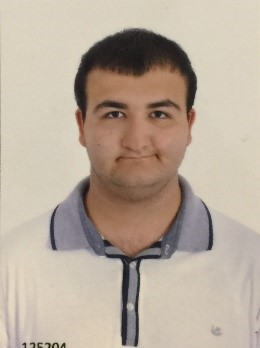

Yagız Esmerligil
Frontend Developer-Ön Uc Gelistirici-Web Tasarım

Yagız Esmerligil
- 12 Haziran 1998'de Ankara'da dogdu.
- Anasınıfı egitimini Özel Hatay Dogus Okulları'nda tamamladı.
- Ilkögretiminin ilk 7 yılını Bedii Sabuncu Ilkögretim Okulu'nda tamamladı.
- Ilkögretiminin son senesini tekrardan Özel Hatay Dogus Okulları'nda tamamladı.
- Lise egitiminin ilk 3 senesini Selim Nevzat Sahin Anadolu Lisesi'nde tamamladı.
- Lise egitiminin son senesini Özel Antakya Ata Koleji'nde tamamladı.
- Özel Antakya Ata Koleji'nde derslerinde gösterdigi basarıdan dolayı Okul Ikinciligi'ni kazandı.
- Üniversite egitimini Baskent Üniversitesi'nde tamamladı.
- Baskent Üniversitesi'nde Bilgisayar Mühendisligi bölümünde okudu.
- Baskent Üniversitesi'nde okurken çesitli seminerlere katıldı ve çesitli projelerde görev aldı.
- Baskent Üniversitesi'nden 3.28 not ortalaması ile mezun oldu.
- Girmis oldugu ALES sınavından 84.35 puan aldı.
- Python diliyle alakalı kendini ilerletmek istese de sonradan fikir degistirip Web Tasarım alanına yöneldi.
- Web Tasarım ile alakalı kurslar alıp yine bu alanla ilgili çesitli uygulamalar yaptı.
- Su anda da Web Tasarım alanında kendini gelistirmektedir.